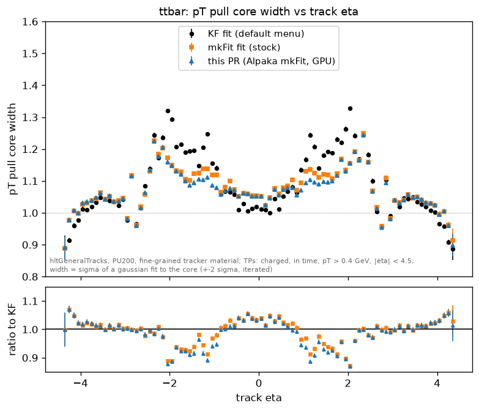
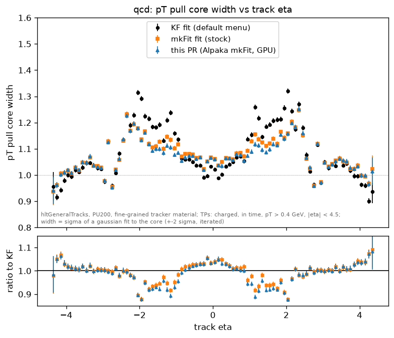

Phase-2 HLT, PU200, hltGeneralTracks. KF fit (default menu) vs mkFit fit (stock) vs this PR (Alpaka mkFit, GPU), ratio to the KF fit. All menus with the fine-grained tracker material. ttbar 2000 events, QCD 1000 events. Each plot also as PDF.






Sigma of a gaussian fit to the core of the pT pull (+-2 sigma, iterated), hltGeneralTracks matched to TPs (charged, in time, pT > 0.4 GeV, |eta| < 4.5). The fine-grained material rows are the samples above; the release-material rows are the same menus before the material update (5k-event samples). The fitted Sigma in the MTV pull boxes comes from a wider fit range and reads 0.1-0.15 higher.
| sample | tracker material | menu | all |eta| | |eta| 0-1.2 | |eta| 1.2-2.5 | |eta| 2.5-4.5 |
|---|---|---|---|---|---|---|
| ttbar | fine-grained | KF fit (default menu) | 1.09 | 1.07 | 1.21 | 1.02 |
| ttbar | release (before the fine-grained update) | KF fit (default menu) | 1.44 | 1.10 | 1.71 | 1.59 |
| ttbar | fine-grained | mkFit fit (stock) | 1.08 | 1.08 | 1.15 | 1.03 |
| ttbar | release (before the fine-grained update) | mkFit fit (stock) | 1.43 | 1.09 | 1.65 | 1.64 |
| ttbar | fine-grained | this PR (Alpaka mkFit, GPU) | 1.08 | 1.07 | 1.13 | 1.03 |
| qcd | fine-grained | KF fit (default menu) | 1.09 | 1.06 | 1.21 | 1.02 |
| qcd | release (before the fine-grained update) | KF fit (default menu) | 1.42 | 1.09 | 1.71 | 1.59 |
| qcd | fine-grained | mkFit fit (stock) | 1.08 | 1.08 | 1.16 | 1.03 |
| qcd | release (before the fine-grained update) | mkFit fit (stock) | 1.41 | 1.09 | 1.65 | 1.64 |
| qcd | fine-grained | this PR (Alpaka mkFit, GPU) | 1.08 | 1.07 | 1.14 | 1.03 |